More plotting
_________________________________________________________________________________
Exercise 1.1
(a)
| > |
plot([cos(10*t)/(1+t^2),sin(10*t)/(1+t^2),t=0..5]); |
This starts at 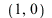
and moves anticlockwise spiralling in towards the origin.
(b)
| > |
plot([sin(3*t),sin(2*t),t=0..2*Pi]);
plot([sin(6*t),sin(7*t),t=0..2*Pi]); |
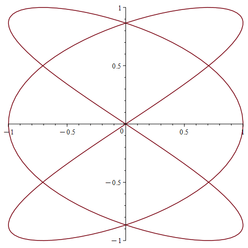 |
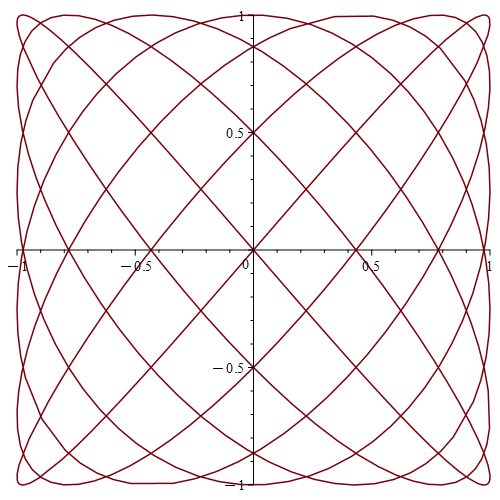 |
|
(c)
| > |
plot([t-sin(t),1-cos(t),t=0..8*Pi]); |
| > |
plot([t-sin(t),1-cos(t),t=0..8*Pi],scaling=constrained); |
(d)
| > |
plot([2*t/(1+t^2),(1-t^2)/(1+t^2),t=-8..8]); |
This is (most of) a circle of radius one, centred at the origin. To see algebraically that the point 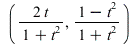
lies on the circle, we must show that 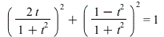
:
| > |
simplify((2*t/(1+t^2))^2+((1-t^2)/(1+t^2))^2); |
 |
(1) |
To do this by hand, note that
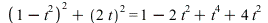
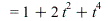
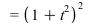
.
Divide this by 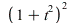
to get the required result.
_________________________________________________________________________________
Exercise 1.2
| > |
x := 4*t^2-1;
y := 8*t^3-8*t; |
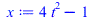 |
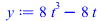 |
(2) |
(a)
| > |
plot([x,y,t=-1.5..1.5]); |
(b) We can see from the graph that the curve crosses itself at the point where  and
and 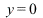
. We can find the corresponding values of  as follows:
as follows:
We can substitute back to check that this is correct:
![[3, 0]](images04/lab_sols04_22.gif) |
(4) |
(c)
We conclude that the curve crosses the  axis at the points
axis at the points 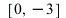
(when 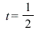
) and 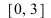
(when 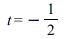
).
(d)
| > |
plot((X-3)*sqrt(X+1),X=-1..8); |
| > |
plots[display](
plot((X-3)*sqrt(X+1),X=-1..8,color=blue),
plot([x,y,t=-2..2],color=red),
view=[-2..8,-15..15]
); |
The two curves fit together, indicating that our functions 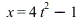
and 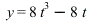
satisfy 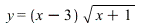
. As the graph of 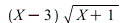
covers only half of the curve, there must be some wrinkle in the story somewhere, and it is not too hard to see that this comes from the sign ambiguity in the square root. The right thing to check is the equation obtained by squaring, which says that 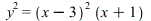
. Maple tells us that this is indeed correct:
| > |
simplify(y^2-(x-3)^2*(x+1)); |
 |
(9) |
_________________________________________________________________________________
Exercise 1.3
In the command plot([sin(x),cos(x),x=0..4*Pi]), the range x=0..4*Pi is inside
the square brackets, so this is a parametric plot, with the horizontal coordinate being  and the
and the
vertical coordinate being  . This is just a circle of radius one around the origin.
. This is just a circle of radius one around the origin.
| Error, missing operator or `;` |
|
| > |
plot([sin(x),cos(x),x=0..4*Pi]);
|
In the command plot([sin(x),cos(x)],x=0..4*Pi), the range is outside the square
brackets. We therefore have an ordinary plot of two different functions shown together, the first
(in red) being  , and the second (in blue) being .
, and the second (in blue) being .
| > |
plot([sin(x),cos(x)],x=0..4*Pi);
|
The command plot([x,sin(x),x=0..4*Pi]) again has the range inside the square
brackets, so it is a parametric plot of the curve . However, because the horizontal
coordinate is just  , this is the same as the ordinary graph of the function
, this is the same as the ordinary graph of the function  .
.
| > |
plot([x,sin(x),x=0..4*Pi]); |
The command plot([y,sin(y),y=0..4*Pi]) generates exactly the same picture
as the previous command. Maple pays no attention to the convention that  usually represents
usually represents
the horizontal coordinate, and  usually represents the vertical one. Instead, the first entry
usually represents the vertical one. Instead, the first entry
(which is  here) is always the horizontal coordinate, and the second entry (which is
here) is always the horizontal coordinate, and the second entry (which is 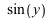
)
is always the vertical coordinate. With this interpretation, it does not make any difference whether
the variable is called  or
or  .
.
| > |
plot([y,sin(y),y=0..4*Pi]); |
In the command plot([sin(y),y,y=0..4*Pi]) the  comes second and so represents
comes second and so represents
the vertical coordinate, and the function  gives the horizontal coordinate. We therefore
gives the horizontal coordinate. We therefore
get a standard sin wave running vertically.
| > |
plot([sin(y),y,y=0..4*Pi]); |
Finally, in the command plot([sin(y),y],y=0..4*Pi) the range is again outside the square
brackets, so we have an ordinary plot of the two functions  (in red) and
(in red) and  (in blue) against
(in blue) against  .
.
| > |
plot([sin(y),y],y=0..4*Pi); |
_________________________________________________________________________________
Exercise 2.1
| > |
implicitplot(y^2=x^3-x,x=-2..2,y=-4..4); |
| > |
implicitplot(y^2=x^3-x,x=-2..2,y=-4..4,grid=[100,100]); |
The picture below shows that the topology of the curve 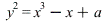
changes somewhere between 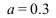
and 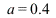
.
| > |
implicitplot([y^2=x^3-x+0.3,y^2=x^3-x+0.4],
x=-2..2,y=-4..4,
color=[red,blue],
grid=[100,100]); |
The following, more detailed picture, shows that the change is close to 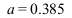
| > |
implicitplot([y^2=x^3-x+0.38,
y^2=x^3-x+0.385,
y^2=x^3-x+0.39],
x=0.4..0.8,y=-0.5..0.5,
color=[red,blue,green],
grid=[100,100]); |
To find the exact value where the change occurs, note that we have 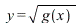
or 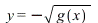
, where
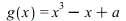
. If is negative near  then there is no square root and we have a gap in the
then there is no square root and we have a gap in the
graph. If  is positive near
is positive near  then there are two separate square roots and so two disjoint
then there are two separate square roots and so two disjoint
branches of the graph. The crossover occurs when the graph of  just touches the
just touches the  -axis near
-axis near  ,
,
so we have a repeated root, where  and its derivative both vanish. The derivative is
and its derivative both vanish. The derivative is 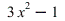
, and the
only place near  where this vanishes is at , which means that .
where this vanishes is at , which means that .
We want this to be zero as well, so we must have
_________________________________________________________________________________
Exercise 2.2
We now look at the curve . When , this is just a circle. When , it is a circle with wiggles:
| > |
a := 1; implicitplot(x^2+y^2+a*(sin(2*Pi*x)+cos(2*Pi*y))=100,
x=-11..11,y=-11..11,grid=[200,200]); |
When is a little larger, some bubbles break away from the circle:
| > |
a := 5; implicitplot(x^2+y^2+a*(sin(2*Pi*x)+cos(2*Pi*y))=100,
x=-11..11,y=-11..11,grid=[200,200]); |
As  increases, we get an octagonal curve with squarish wiggles, with rows of bubbles running parallel to the curve, with the more distant rows being smaller.
increases, we get an octagonal curve with squarish wiggles, with rows of bubbles running parallel to the curve, with the more distant rows being smaller.
| > |
a := 20; implicitplot(x^2+y^2+a*(sin(2*Pi*x)+cos(2*Pi*y))=100,
x=-11..11,y=-11..11,grid=[500,500]); |
| > |
a := 80; implicitplot(x^2+y^2+a*(sin(2*Pi*x)+cos(2*Pi*y))=100,
x=-21..21,y=-21..21,grid=[200,200]); |
________________________________________________________________________________
Exercise 3.1
(a)
| > |
listplot([10,40,20,30,50,10,20],style=POINT); |
| > |
listplot([1,2,3,4,5,6,7,8,9,10,11,12,13,14,15,16,17,18,19,20,
19,18,17,16,15,14,13,12,11,10,9,8,7,6,5,4,3,2,1,
2,3,4,5,6,7,8,9,10,11,12,13,14,15,16,17,18,19,20],
style=POINT); |
(b)
| > |
listplot([10,40,20,30,50,10,20],style=POINT,symbol=CROSS); |
| > |
listplot([10,40,20,30,50,10,20],style=POINT,symbol=BOX); |
(c)
| > |
listplot([10,40,20,30,50,10,20]); |
_________________________________________________________________________________
Exercise 3.2
(a)
 |
(11) |
(b)
| > |
seq(ithprime(i),i=1..100); |
(c)
| > |
listplot([seq(ithprime(n),n=1..100)],style=POINT); |
(d)
| > |
plot([x*(ln(ln(x))+ln(x)-1),x*(ln(ln(x))+ln(x))],x=1..100); |
| > |
display(
listplot([seq(ithprime(n),n=1..100)],style=POINT),
plot([x*(ln(ln(x))+ln(x)-1),x*(ln(ln(x))+ln(x))],x=1..100)
);
|
| > |
f0 := (n) -> n * log(n);
f1 := (n) -> n * (log(n) + log(log(n)) - 1);
f2 := (n) -> n * (log(n) + log(log(n)) - 1 + (log(log(n)) - 2)/log(n) + (6*log(log(n)) - log(log(n))^2-11)/log(n)^2); |
| > |
display(
listplot([seq(ithprime(i),i=1..1000)],
style=POINT,symbol=POINT),
# plot([x*(ln(ln(x)) + ln(x) - 1),x*(ln(ln(x)) + ln(x))],x=1..1000)
plot(f1(x),x=2..1000)
); |
_________________________________________________________________________________
Exercise 3.3
(a)
(b)
| > |
seq(evalf(n!),n=1..20); |
(c)
| > |
listplot([seq(evalf(n!),n=1..20)],style=POINT,axes=FRAME); |
We can see very little in this picture because 1!, 2!, ..., 17! are all very much smaller than 20!. The scale is chosen so that 20! fits in the picture, but this means that 1!, 2!, ..., 17! are jammed right down by the  -axis. (The effect of the option axes=FRAME is to draw the axis a little below
-axis. (The effect of the option axes=FRAME is to draw the axis a little below  , allowing us to see the points. If we left out that option then the points would actually lie on the axis.)
, allowing us to see the points. If we left out that option then the points would actually lie on the axis.)
(d)
| > |
listplot([seq(log(n!),n=1..20)],style=POINT); |
(e)
| > |
f := (x) -> sqrt(2*Pi)*x^(x+1/2)*exp(-x); |
| > |
plot(log(f(x)),x=1..20); |